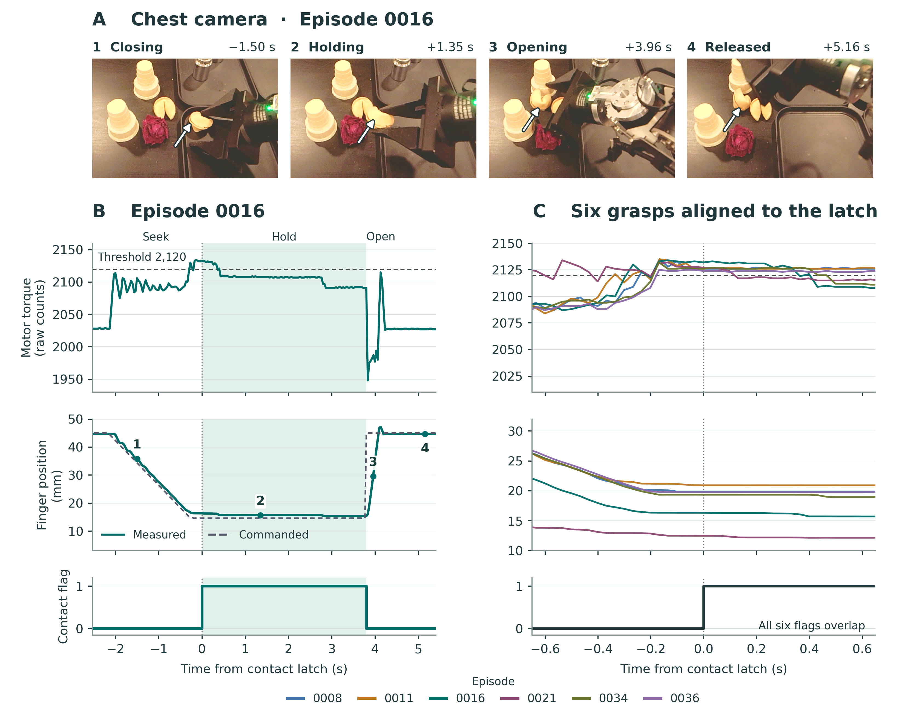

Work in progress · 24 November 2026
Learning when to grasp delicate objects with motor feedback
Abstract
We train a contact-conditioned π₀.₅ policy to decide when to grasp. A local controller uses motor feedback to determine where the fingers stop. We combine human contact labels with robot demonstrations and examine six recorded fortune-cookie grasps. In a preliminary delicate-object pilot, the contact system completed 23 of 30 attempts and stock π₀.₅ completed 14 of 30. A matched robot-only contact policy is needed to isolate the contribution of human supervision.
Policy and supervision
Starting from π₀.₅ [1], the policy reads the chest image, instruction, seven measured arm angles, finger position and available contact feedback. A prediction head uses these observations to produce a 30-step contact plan.

Each batch pairs 16 human and 16 robot windows. We mask the human action loss. On OpenArm, seek and hold label a grasp request, and open labels release. We fit normalization on 89 robot training episodes, validate on 18, reserve 25 for test and train for 10,000 updates.
Preliminary robot comparison
Operators scored five groups of six attempts per policy using fortune cookies, dried flowers and wafer cones. Stock π₀.₅ uses chest vision, language and proprioception to predict arm motion and a binary gripper request.
| Deployed policy | Successes in each group of 6 | Total |
|---|---|---|
| Mixed contact policy | 5, 3, 5, 5, 5 | 23/30 (76.7%) |
| Stock π₀.₅ baseline | 2, 4, 3, 2, 3 | 14/30 (46.7%) |
Training sources, gripper control and horizon differed (30 steps for contact, 50 for stock). Failure causes were not independently adjudicated. The planned 144-trial evaluation includes a robot-only contact policy with the same controller to isolate human co-training across contact, goal, spatial and two-stage tasks.
Motor feedback during fortune cookie grasps
We selected six teleoperated grasps from the November 17 pick-and-place collection after inspecting chest-camera frames for a visible cookie between the fingers. All used a 16 mm/s seek speed in the finger-joint coordinate. The controller stops advancing its position target on a threshold crossing. A sustained crossing for 150 ms latches contact and enters hold. Releasing the grasp clears the latch.

What the latch measures
Finger position at latch ranged from 12.5 to 20.9 mm. In all six grasps the commanded position stayed fixed through hold, which lasted 2.17–3.80 s. In four grasps the raw torque fell below threshold during hold while the flag stayed high. The latch records the controller's grasp state. These traces provide neither an independent timestamp of first touch nor a calibrated measure of fingertip force or cookie damage.
Trace source. OpenArm pick-place-contact-2026-11-17, /cookie_gripper/state, episodes 0008, 0011, 0016, 0021, 0034 and 0036. Chest frames from /cam_chest/image_raw/compressed.
References
[1] Physical Intelligence (2025). π₀.₅: a Vision-Language-Action Model with Open-World Generalization. arXiv:2504.16054.